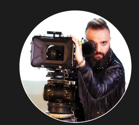
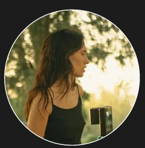
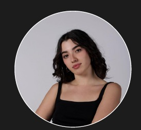
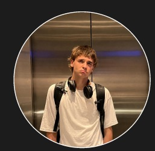

cortometraje
MACAT presenta "Raíces" en la Muestra Audiovisual de la UMA
El primer cortometraje de ficción del equipo se proyecta ante el claustro y más de doscientos estudiantes. El debate posterior deja claro que MACAT ha llegado para quedarse.
UMA Experience · Universidad de Málaga · 2024
MACAT es el equipo audiovisual universitario de la UMA. Cortometrajes, documentales, videoclips, festivales y mucho más — hechos por estudiantes con ganas de crear.
sobre nosotros
MACAT (Málaga Cinematographic Audiovisual Team) es una comunidad y productora audiovisual universitaria nacida dentro de la convocatoria UMA Experience de la Universidad de Málaga.
Conectamos a estudiantes apasionados por el cine, la comunicación y la creación audiovisual para desarrollar proyectos reales, aprender en equipo y generar oportunidades dentro y fuera de la universidad.

"nadie hace cine solo" — y nosotros somos la prueba.
proyectos destacados


simbiosis con macat
Málaga Cinéfila es una asociación juvenil que actúa como comunidad joven y altavoz en redes, agenda cultural de cineclubs y puerta de entrada a MACAT. No son proyectos enfrentados: se fortalecen mutuamente.
Crearán su propio cineclub en la Facultad de Ciencias de la Comunicación, con proyecciones semanales de largometrajes y cortometrajes.
"Mi tío dice que vivimos el triple de tiempo desde que se inventó el cine, porque las películas nos dan el doble de lo que sacamos en la vida."
— Edward Yang
próxima proyección

estructura interna
MACAT está organizado como una productora real: áreas de soporte y áreas de producción, cada una con su propio espacio para aprender y crear.
las personas detrás de macat

Mentor
Líder
Líder
SecretarioPróximamente — espacio reservado para profesionales, empresas y antiguos estudiantes que se sumen a MACAT.
apoyo institucional
colaboradores institucionales
patrocinadores — próximamente
¿Quieres aparecer aquí? Hablemos
actualidad
cortometraje
El primer cortometraje de ficción del equipo se proyecta ante el claustro y más de doscientos estudiantes. El debate posterior deja claro que MACAT ha llegado para quedarse.
formación
El colorista madrileño comparte secretos de iluminación y etalonaje con veintidós miembros del equipo en una sesión de cuatro horas que se repetirá este otoño.

málaga cinéfila
El cineclub de MACAT arranca con "El espíritu de la colmena" de Víctor Erice y una conversación sobre el cine como memoria. El éxito de la primera sesión garantiza la continuidad del proyecto.
exposición audiovisual
desliza para recorrer la exposición →


forma parte del equipo
No hace falta experiencia previa — solo ganas de aprender, crear y trabajar en equipo. Si tienes algo que aportar (aunque no sepas exactamente qué todavía), este es tu sitio.
cómo unirte
preguntas frecuentes
quiero unirme
"las mejores historias
todavía no se han rodado"
hablamos
Estamos en la Universidad de Málaga y nos encanta recibir propuestas de proyectos, colaboraciones institucionales, patrocinios y, sobre todo, de nuevos miembros.